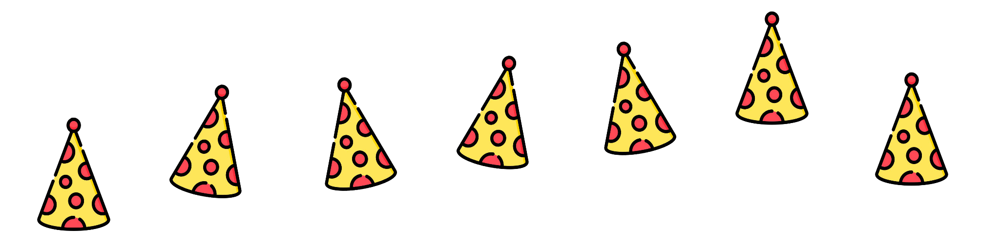

Kim Lara Feller, Technische Hochschule Lübeck, Matrikelnummer 331177
Hinweise und Referenzen Die Grafik für die Scheibe ist eine Privataufnahme meines Katers. Mit Hilfe von Adobe Animate habe ich ein entsprechendes Sprite Sheet erstellt. Die Grafik für den "Partyhut" als Teil der versuchten Erweiterung habe ich unter folgendem Link entnommen: https://www.flaticon.com/de/kostenloses-icon/partyhut_2156457 und ebenfalls daraus mit Animate ein Sprite Sheet erstellt. Die Scheibe kann mit Hilfe der Button "Links", "Rechts" und "Animation an/aus" animiert werden. Zudem können die Optionen in entsprechender Reihenfolge mit der Tastatureingabe l, r und a erfolgen.